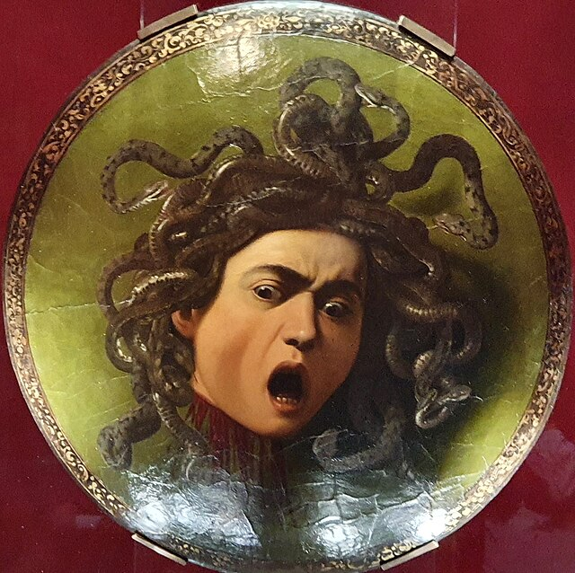
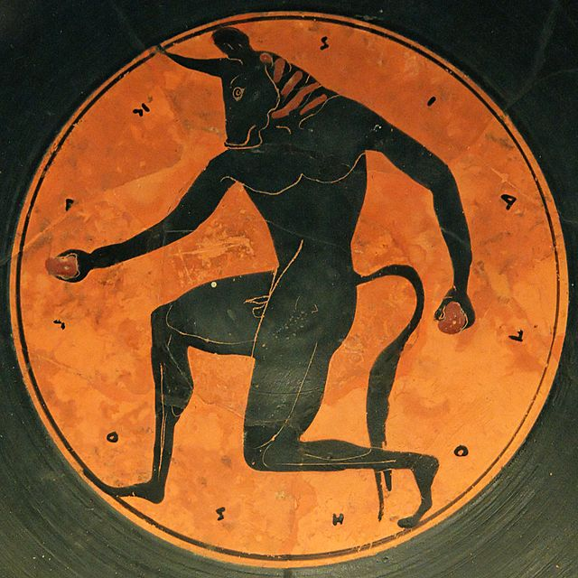

Na mitologia grega, existem diversas criaturas que não podem ser associadas a deuses ou semideuses, isso se deve ao fato de que a maioria não tem ligação direta com o sangue divino, acabando por cair nessa categoria, outros também podem nascer de titãs. Eles são por muitas vezes animais humanoides e sobrenaturais, suas origens são variadas, e podem existir de diversas formas, como pela punição de um deus, ou o cruzamento de um animal com um ser humano. Apenas alguns são tão fortes quanto deuses, e a grande parte deles são malignos, causando destruição em massa, gerando pânico nos moradores das cidades mitológicas e destinados a serem derrotados por heróis lendários como Teseu, Hércules e Ulisses.

Dentre os monstros da mitologia grega, vale citar alguns que causam mais impacto na história e são lembrados até hoje.
Górgonas: monstros gerados a partir da relação de Ceto, deusa dos monstros marinhos, e Fórcis, considerado como príncipe do mar ou deus do mar primitivo, antes da existência de Poseidon. As górgonas eram monstros com monstros com cabelos de serpente, garras de bronze e presas. Seu olhar transformava homens em pedra. O exemplo mais conhecido de uma górgona é a medusa, que era uma humana comum e foi amaldiçoada por Poseidon.

Minotauro: feito com cabeça de touro, e corpo humano, minotauro nasceu por punição do deus Poseidon. O rei Minos havia prometido sacrificar um touro no nome de Poseidon, mas como isso não foi cumprido, o deus acabou enfeitiçando a Pasífae, esposa de Minos, para que ela se apaixonasse pelo touro. Ela acabou se relacionando com o animal através de uma vaca de madeira, a qual ela estava dentro, dando origem ao minotauro. Posteriormente, seu filho começou a comer carne humana, então o rei decidiu colocá-lo em um labirinto.